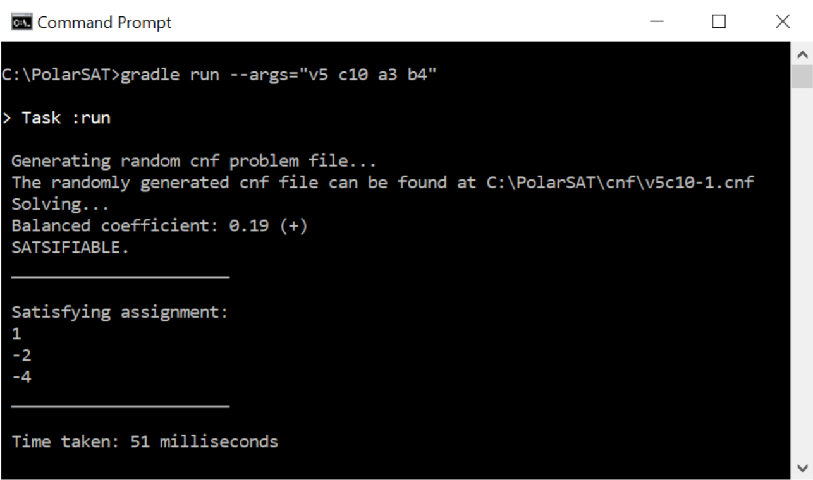
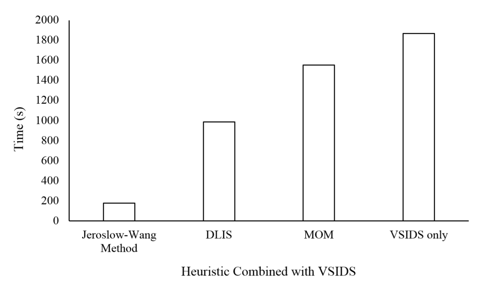
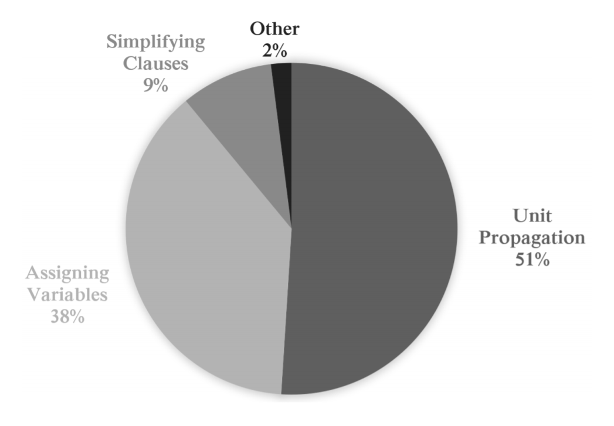

Note: This is an overview of my project and only highlights some of the aspects of my research and implementation.
However, the full report (.pdf) can be viewed from below.
Introduction
Ever since the Boolean satisfiability problem (SAT) was proven to be NP-complete it has been
regarded as one of the most important problems in theoretical computer science. SAT is a major
topic in many areas, including cryptography, verification and artificial intelligence. Hence,
research into SAT is very crucial for the future of computer science and its many practical
applications.
SAT (in conjunctive normal form) is a problem which involves a conjunction of clauses to be
satisfied, where each clause contains a disjunction of one or more literals. A clause is satisfied if
at least one literal in the clause is assigned to true. An instance is declared satisfiable if every
clause in the formula is satisfied. A SAT solver's goal is to find the assignment of variables that satisfy all clauses in the formula.
As SAT is NP-complete, progression into the Boolean satisfiability problem will eventually
either allow us to solve hard problems in polynomial time, or allow us to realise that problems
in the NP complexity class are different from problems in the P complexity class. Although a
polynomial time algorithm for the SAT problem currently does not exist, many techniques have
been developed to reduce the search space and allow SAT solvers to run reasonably quickly.
Software
PolarSAT is a program that tackles the Boolean Satisfiablity (SAT) problem.
More specifically, it is a Conflict Driven Clause Learning (CDCL) SAT solver that is able to solve SAT problems encoded in the DIMACS
format. It uses a technique called polarity tuning combined with common heuristics such as
VSIDS and the Jeroslow Wang method to decide variable assignments. It is inspired by another
SAT solver known as MiniSAT, and therefore implements variations of its techniques. PolarSAT
is tied to a random problem generator which is able to generate random SAT problems to solve.
This allows users to experiment with the solver and use it for educational purposes.

Research
The development of my SAT solver is based on extensive research on various different techniques, algorithms and heuristics. Each heuristic or technique
used in the program is implemented in a modular manner (as a single method in Java), allowing the SAT solver to be tuned and improved very easily. I conducted many
experiments involving a diverse set of benchmarks and used the results of these experiments to tune the parameters of each heuristic. I came to the conclusion that the
VSIDS heuristic combined with the Jeroslow-Wang method was the most effective decision heuristic as it required the least amount of time to solve all the benchmarks.

The objective of this project was to develop a SAT
solver designed to tackle imbalanced instances, that is, instances where most literals appear
more often in one polarity. When dealing with imbalanced instances it is important to be able to quantify exactly how
balanced an instance is so that it can be compared with others and allow the tuning of the SAT solver. Given two imbalanced instances,
one instance could be more (or less) balanced than the other. A formula, which you may view in the full report, was constructed for
this purpose.
Possible Improvements
The implementation of the SAT solver could have been
improved in many areas. It is important for methods in the SAT solver to be as efficient as
possible because SAT solvers in general regularly call the same methods over the course of their
execution. This means that any inefficient behaviour in the SAT solver is typically amplified
over time as the algorithm loops. After some analysis of PolarSAT, it was transparent that
unit propagation consumes the most time.

In fact, unit propagation consumes up to 51% of the time on average to solve instances. This
is a major portion of the programs execution time. The implementation of unit propagation
in the accompanied SAT solver is admittedly quite naive. It recursively simplifies the formula
and assigns literals contained in unit clauses until it can no longer do so. By implementing
the two watched literal data structure the performance of the SAT solver could be significantly
improved, making it even more effective and efficient for larger and complex instances.